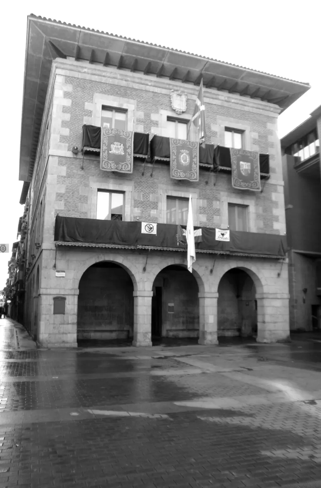

Jaraunspenak eta testamentuak
Jaraunspen bat onartzea edo ukatzea, anai-arreben artean banatzea eta testamentua egitea.
Jaraunspenak, banantzeak, kaleratzeak, kontratuak eta isunak. Hasi aurretik esango dizugu zer aukera dituzun eta zer kostatzen den.
Familientzat, langileentzat eta enpresa txikientzat
Tolosaldeko jendearen kontuak daramatzagu. Zer paper ekarri behar diren begiratzen duzu, idazten diguzu eta lehen kontsultarako eguna ematen dizugu.

Jaraunspen bat onartzea edo ukatzea, anai-arreben artean banatzea eta testamentua egitea.
Ados egon ala ez: hitzarmena, zaintza, pentsioa eta etxearekin zer gertatzen den.
Kaleratze-gutuna eta kitapena berrikusten ditugu, eta zor dizutena erreklamatzen dugu.
Kontratua sinatu baino lehen irakurtzen dugu, eta beste aldeak betetzen ez badu lagunduko dizugu.
Udalaren, trafikoko edo ogasuneko isunak errekurritzen ditugu, arrazoiak daudenean.
Zure NANa eta epaitegiaren edo beste alderdiaren edozein gutun.
Aldez aurretik hitzordua eskatuta ematen dugu arreta, astelehenetik ostiralera.
En castellano
Euskaraz
Deitu 943 00 00 00 telefonora edo idatzi WhatsApp bidez eta lehen kontsultarako eguna emango dizugu.
Astelehenetik ostiralera, 9:00etatik 14:00etara eta 16:00etatik 19:00etara.
Deitu